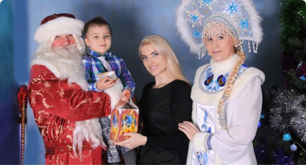
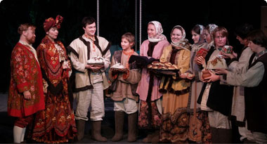

Самое интересное
Вск, 03 января — Вск, 10 января
Москва, наб. Пресненская, д. 4, стр. 1
Новый год в детском городе мастеров
Согласно легенде, город мастеров «Мастерславль» располагается возле магического источника, который в течение всего года наполняется радостью и добром, а в новогодние праздники начинает излучать удивительный свет.
от 1’700 руб.
Купить билет
Новогодние елки и спектакли для детей

Вск, 03 января — Вск, 10 января
Елки в детском клубе «Детский городок»
Детский клуб «Детский городок» в ТЦ «Щёлково»
Новогодняя пора — время беззаботной радости и волшебства. В полной мере насладиться магией зимних праздников ваш ребёнок сможет в «Детском городке», где будут проводиться спектакли, встречи с Дедом Морозом и Снегурочкой, игры и многое другое.
Купить билет
1’500 руб.

Вск, 03 января — Вск, 10 января
«Два Мороза» в Московском театре русской драмы
Москва, Калужская пл., д. 1
В основу представления легла история любви из пьесы Александра Николаевича Островского «Снегурочка». Спектакль поставлен заслуженными деятелями искусств России Михаилом Щепенко и Тамарой Басниной. Легкие к восприятию диалоги, красочные костюмы делают спектакль понятным маленьким зрителям.
Купить билет
от 500 руб.
Вск, 03 января — Вск, 10 января
Спектакль «Однажды в детстве
Петровский пер., д. 5/9
Сюжеты постановок придумывали сами дети, они построены на детских разговорах, смешных словечках, весёлых играх и невероятных фантазиях. Детское воображение способно превратить обыкновенную квартиру в неизведанный мир. Здесь возможно стать супергероем, каждая занавеска таит за собой чудовище, в шкафах спрятаны сокровища, не говоря уже о том, что под живёт Марлинбонц...
Купить билет
от 1100 руб.
Вск, 03 января — Вск, 10 января
Новогодняя джазовая сюита
Москва, Шелапутинский переулок, дом 6
Исполнительница является заслуженной артисткой Хакасии, а в 2010 году была удостоена высшей премии Международного вокального форума, проводившегося в Италии. В репертуаре певицы — как арии из известных опер, так и джазовые композиции, а кроме того, Монисова прекрасно исполняет романсы. Кстати, все перечисленные направления найдут отражение в новогодней программе артистки.
Регистрация
Бесплатно
Загрузить еще
Не пропустите
Санкт-петербург, 19 ноября 2015 (четверг), 19:00
Как продавать больше? 100+ приемов и техник убеждения клиента в продажах
Регистрация
Бесплатно
Санкт-петербург, 19 ноября 2015 (четверг), 19:00
Большой инвестиционный форум 2015 в Санкт-Петербурге
Москва, 19 ноября 2015 (четверг), 19:00
Raiffeisen Involve: топ-менеджера Райффайзенбанка о стратегии, бизнес-модели и IT
Санкт-петербург, 19 ноября 2015 (четверг), 19:00
Как продавать больше? 100+ приемов и техник убеждения клиента в продажах